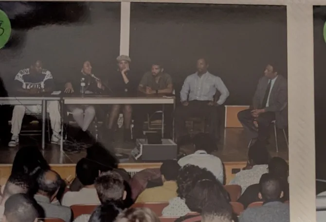

February 4–24 · Film lectures and symposium
Today's Black Cinema: Lectures and symposium
The Today's Black Cinema program included lectures at the Oakland Museum and a film-industry symposium at UC Berkeley. Two panel photographs survive in the associated album; their precise session has not been identified.